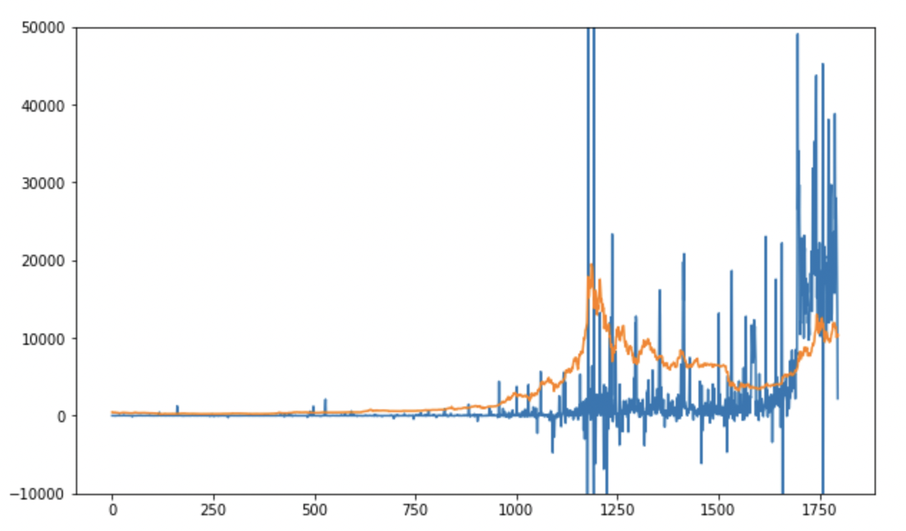
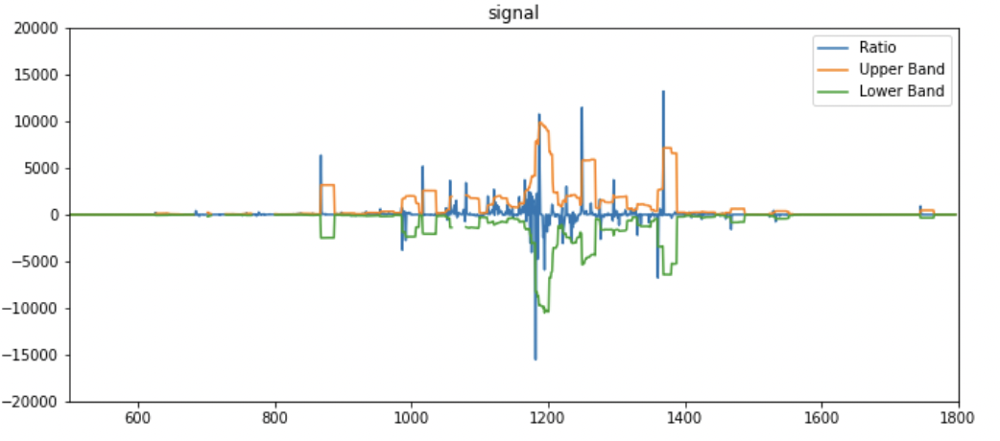
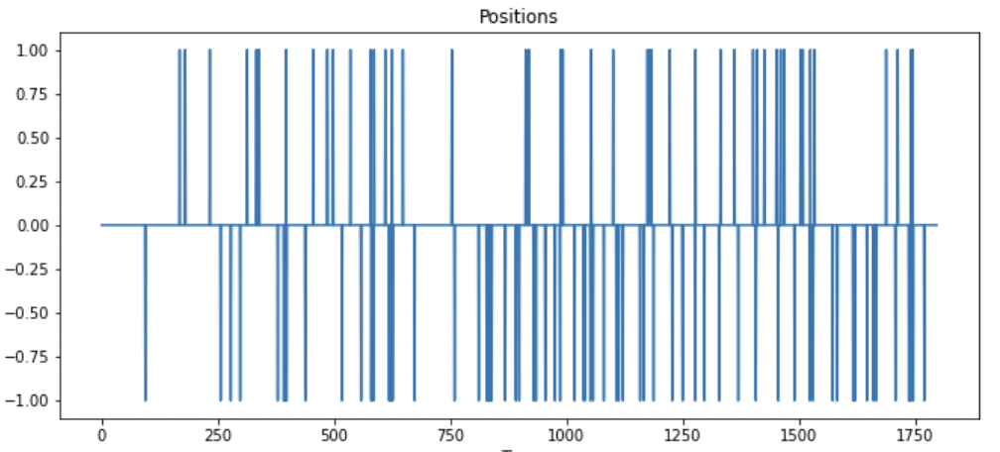
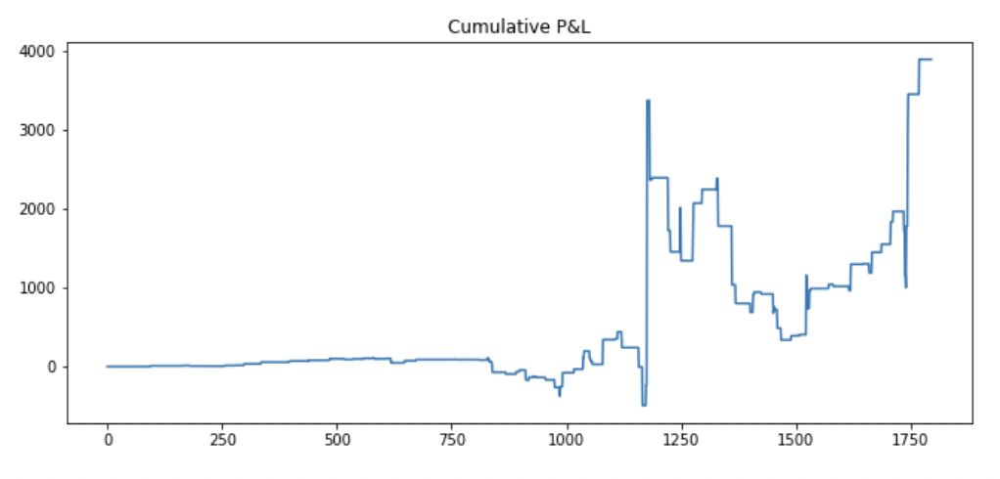
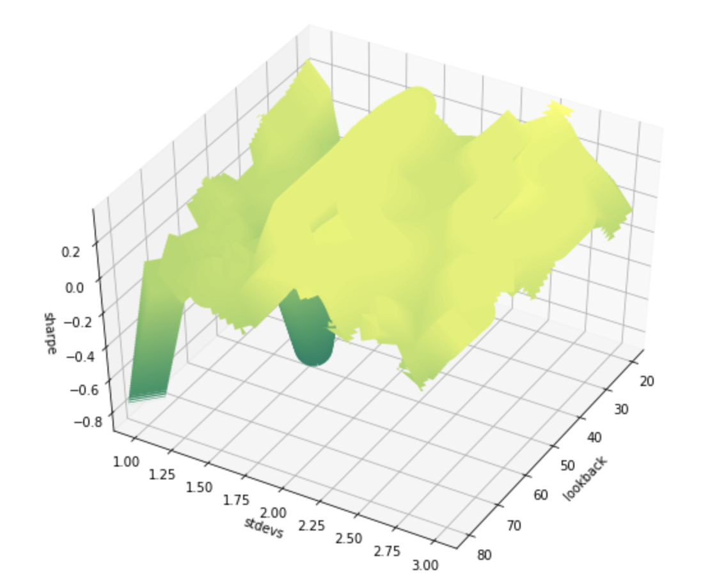
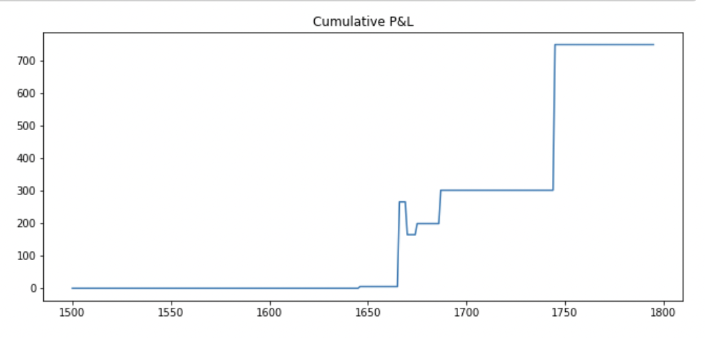

Bitcoin trading algorithm using Twitter API data.
As part of the Maroon Capital Systematic Cohort, our team was tasked with designing and testing a data driven trading algorithm. We hypothesized that given Bitcoin large pop culture presence, its price may be sensitive to changes in public sentiment. To determine public sentiment, we used four years of Twitter API data from https://www.kaggle.com/alaix14/bitcoin-tweets-20160101-to-20190329. To generate a daily score, we applied VADER to each tweet, taking the difference of the positive and negative score, then multiplying by number of likes.
Price of Bitcoin (orange) vs public sentiment score (blue)
We traded on the ratio of our public sentiment score to the price of Bitcoin, assuming that the ratio would be mean-reverting. As such, our trading strategy was dependent on two parameters: lookback and width. When the present signal exceeds the mean of the signal over the lookback window plus the width times the standard deviation over the lookback window, we short Bitcoin and hold until this condition is no longer satisfied. We buy when the signal is less than the mean minus the width times the standard deviation, and sell when the condition is no longer satisfied. For example, here is how the algorithm did with lookback = 20 and width = 2.
Signal vs Upper and Lower Bands (lookback = 20, width = 2)
Positions held (lookback = 20, width = 2)
Profit and Loss (lookback = 20, width = 2)
To find optimal parameters, we then grid-searched over lookback and width using our training data. Other optimazation techniques (such as gradient descent) work best on continous and differentiable cost functions. However, the discrete nature of trading algorithm implies the cost function (sharpe ratio) should not be continuous nevertheless differentiable. Note that the surface below just linearly connects the points where the sharpe ratio was calculated and may not be a good approximation for other points.
The grid search seems to have ridges that correlate with the width chosen. A plausible explanation for this trend is that higher widths selects for the same extreme public sentiment/pricing events. Around 1.5 and 2.3, the trading strategy seems especially profitable. However, these standard deviations may be arbitrary and may just fit the profitable extreme events in the training data set. Nevertheless, we took the optimal parameters on the training data and applied them to the testing data.
Profit and loss for the optimal parameters on the training data applied to the testing data.
With a Sharpe Ratio of 1.28, the algorithm is successful, but given the small sample size of positions taken and the concern about overfitting extreme events, I would be hestitant to trust the predictive power of the model.